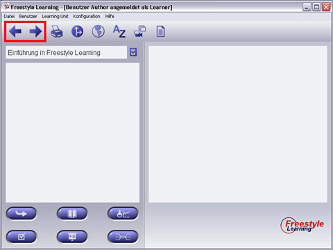

Sobald Sie eine Perspektive (View) gewählt haben, können Sie in er Baumansicht (Structure Tree) beliebig weitere Elemente auswählen. Die Main Navigation Buttons (rot umrandet) beinhalten eine Auswahlhistorie und ermöglichen dadurch eine komfortable Vorwärts- oder Rückwärtsnavigation.

Um zu dem vorherigen Element zu gelangen, klicken Sie auf "Zurück". Bei einem Klick auf "Vorwärts" gelangen Sie wieder Richtung aktuellstes Historienelement. Diese Navigation funktioniert sowohl View- als auch Learning Unit übergreifend.
Zurück zur Hauptseite